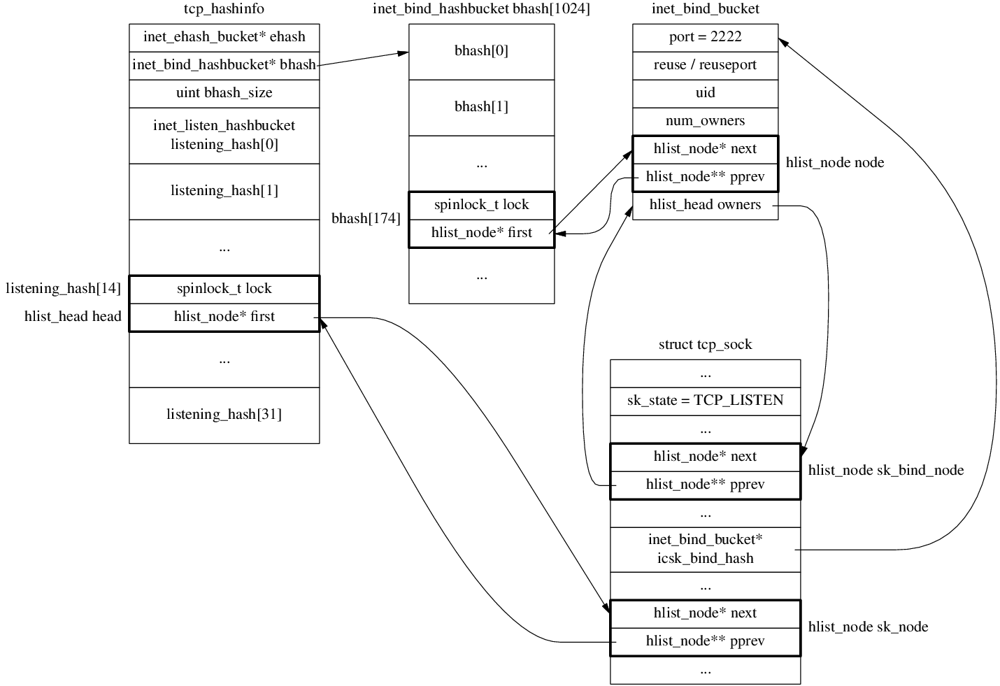
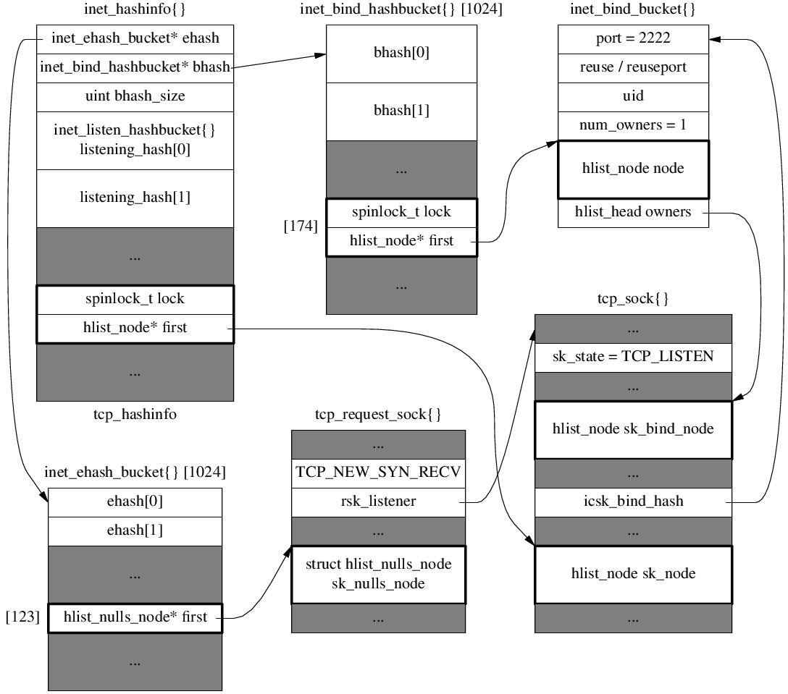

tcp_sock

tcp_hashinfo
// include/linux/types.h
struct hlist_head {
struct hlist_node *first;
};
struct hlist_node {
struct hlist_node *next, **pprev;
};
// include/linux/list_nulls.h
struct hlist_nulls_head {
struct hlist_nulls_node *first;
};
struct hlist_nulls_node {
struct hlist_nulls_node *next, **pprev;
};
// include/net/inet_hashtables.h
struct inet_ehash_bucket {
struct hlist_nulls_head chain;
};
struct inet_bind_hashbucket {
spinlock_t lock; // empty
struct hlist_head chain;
};
struct inet_listen_hashbucket {
spinlock_t lock; // empty
struct hlist_head head;
};
#define INET_LHTABLE_SIZE 32 /* Yes, really, this is all you need. */
struct inet_hashinfo {
/* This is for sockets with full identity only. Sockets here will
* always be without wildcards and will have the following invariant:
*
* TCP_ESTABLISHED <= sk->sk_state < TCP_CLOSE
*
*/
struct inet_ehash_bucket *ehash;
spinlock_t *ehash_locks;
unsigned int ehash_mask;
unsigned int ehash_locks_mask;
/* Ok, let's try this, I give up, we do need a local binding
* TCP hash as well as the others for fast bind/connect.
*/
struct inet_bind_hashbucket *bhash;
unsigned int bhash_size;
/* 4 bytes hole on 64 bit */
struct kmem_cache *bind_bucket_cachep;
/* All the above members are written once at bootup and
* never written again _or_ are predominantly read-access.
*
* Now align to a new cache line as all the following members
* might be often dirty.
*/
/* All sockets in TCP_LISTEN state will be in here. This is the only
* table where wildcard'd TCP sockets can exist. Hash function here
* is just local port number.
*/
struct inet_listen_hashbucket listening_hash[INET_LHTABLE_SIZE]
____cacheline_aligned_in_smp;
};
TCP state diagram in Linux 4.4+

bind
sys_bind
-> inet_bind
-> inet_csk_get_port
-> goto have_snum:
-> goto tb_not_found: tb == NULL
-> inet_bind_bucket_create
-> goto success:
-> inet_bind_hash
-> sk_add_bind_node
-> fput_light
// tcp_hashinfo.bhash -> inet_bind_hashbucket -> inet_bind_bucket[port=2222] -> tcp_sock
listen
sys_listen
-> inet_listen
-> inet_csk_listen_start
-> reqsk_queue_alloc
-> inet_csk_delack_init
-> set sk->sk_state = TCP_LISTEN
-> inet_csk_get_port
-> goto have_snum:
-> goto tb_found:
-> inet_csk_bind_conflict
-> goto tb_not_found: tb != NULL
-> inet_hash
-> __inet_hash // tcp_hashinfo.listening_hash[X] add node
After bind() and listen() 
Passive open
Receive SYN
tcp_v4_rcv
-> __inet_lookup_skb
-> __inet_lookup
-> __inet_lookup_established
-> __inet_lookup_listener // found
-> tcp_v4_do_rcv // sk_state == TCP_LISTEN
-> tcp_rcv_state_process
-> tcp_v4_conn_request // icsk->icsk_af_ops->conn_request
-> tcp_conn_request
-> req = inet_reqsk_alloc
-> reqsk_alloc
req->rsk_listener = sk_listener;
ireq->ireq_state = TCP_NEW_SYN_RECV;
ireq->ireq_family = sk_listener->sk_family;
-> tcp_parse_options
-> tcp_openreq_init
-> tcp_v4_init_req // af_ops->init_req
-> tcp_v4_save_options
-> isn = tcp_v4_init_sequence // af_ops->init_seq
-> tcp_v4_route_req // af_ops->route_req
-> inet_csk_route_req
-> flowi4_init_output
-> ip_route_output_flow
-> tcp_ecn_create_request
-> tcp_openreq_init_rwin
-> tcp_select_initial_window
-> tcp_reqsk_record_syn
-> tcp_try_fastopen
-> inet_csk_reqsk_queue_hash_add
-> reqsk_queue_hash_req //***
-> inet_ehash_insert
-> __sk_nulls_add_node_rcu
-> inet_csk_reqsk_queue_added
inet_csk(sk)->icsk_accept_queue.qlen++
-> tcp_v4_send_synack // af_ops->send_synack
-> tcp_make_synack
-> __tcp_v4_send_check
-> ip_build_and_send_pkt
-> ip_local_out
-> __ip_local_out
-> dst_output
-> ip_output
After receiving SYN 
Receive ACK
tcp_v4_rcv
-> __inet_lookup_skb
-> __inet_lookup
-> __inet_lookup_established // found tcp_request_sock
-> sk->sk_state == TCP_NEW_SYN_RECV
sk = req->rsk_listener;
-> tcp_check_req
-> tcp_parse_options
-> tcp_paws_reject
-> tcp_in_window
-> tcp_v4_syn_recv_sock // inet_csk(sk)->icsk_af_ops->syn_recv_sock
-> tcp_create_openreq_child
-> inet_csk_clone_lock
-> sk_clone_lock
-> newsk = sk_prot_alloc // new tcp_sock
-> sock_copy
newsk->sk_state = TCP_SYN_RECV;
-> tcp_init_xmit_timers
-> inet_sk_rx_dst_set
-> inet_csk_route_child_sock
-> tcp_ca_openreq_child
-> tcp_assign_congestion_control
-> tcp_set_ca_state TCP_CA_Open
-> tcp_sync_mss -> dst_mtu -> ipv4_mtu
-> tcp_mtu_to_mss
-> tcp_bound_to_half_wnd
-> dst_metric_advmss -> ipv4_default_advmss
-> tcp_initialize_rcv_mss
-> __inet_inherit_port
-> inet_bind_hash // put newsk in bind_bucket
inet_csk(sk)->icsk_bind_hash = tb;
-> inet_ehash_nolisten
-> inet_ehash_insert(newsk, reqsk)
-> sk_nulls_del_node_init_rcu(osk)
-> __sk_nulls_add_node_rcu(sk, list)
-> sock_prot_inuse_add
-> tcp_move_syn
-> sock_rps_save_rxhash
-> tcp_synack_rtt_meas
-> skb_mstamp_us_delta
-> tcp_ack_update_rtt
-> tcp_update_rtt_min
-> tcp_rtt_estimator
-> tcp_set_rto
-> inet_csk_complete_hashdance
-> inet_csk_reqsk_queue_drop
-> reqsk_queue_unlink
-> reqsk_put(req)
return found(false)
-> reqsk_queue_removed
&inet_csk(sk)->icsk_accept_queue.qlen--
-> inet_csk_reqsk_queue_add
queue->rskq_accept_head = req // first
-> sk_acceptq_added
sk->sk_ack_backlog++; // listen_sk
-> tcp_child_process
-> tcp_rcv_state_process(child, skb)
-> tcp_validate_incoming
-> tcp_ack
-> tcp_ack_update_window
-> tcp_ecn_rcv_ecn_echo // false
-> tcp_in_ack_event
return 1
switch(sk_state) case TCP_SYN_RECV:
-> inet_sk_rebuild_header // icsk->icsk_af_ops->rebuild_header
-> tcp_init_congestion_control
-> tcp_mtup_init
-> tcp_init_buffer_space
-> tcp_fixup_rcvbuf
-> tcp_sndbuf_expand
-> tcp_full_space
tcp_set_state(sk, TCP_ESTABLISHED)
sk->sk_state_change -> sock_def_wakeup
-> tcp_init_metrics
-> tcp_update_pacing_rate
-> tcp_initialize_rcv_mss
-> tcp_fast_path_on
// out of switch
-> tcp_urg
switch TCP_ESTABLISHED
-> tcp_data_queue
-> tcp_data_snd_check
-> tcp_ack_snd_check
-> parent->sk_data_ready -> sock_def_readable -> wake_up_interruptible_sync_poll
After receiving ACK

Active open
connect
sys_connect
-> inet_stream_connect -> __inet_stream_connect
-> tcp_v4_connect (sk->sk_prot->connect)
-> ip_route_connect
tcp_set_state(sk, TCP_SYN_SENT)
-> inet_hash_connect
-> port_offset = inet_sk_port_offset(sk)
-> secure_ipv4_port_ephemeral(saddr, daddr, dport)
-> md5_transform
-> __inet_hash_connect(..., port_offset, __inet_check_established)
static uint32_t hint // counter
-> inet_get_local_port_range
-> inet_bind_bucket_create
-> inet_bind_hash
-> sk_add_bind_node
-> inet_ehash_nolisten
-> inet_ehash_insert
-> sk_ehashfn
-> inet_ehashfn
-> __inet_ehashfn
-> jhash_3words
-> sock_prot_inuse_add
-> ip_route_newports
-> ip_route_output_flow
-> secure_tcp_sequence_number(saddr, daddr, sport, dport)
-> md5_transform
-> tcp_connect
-> tcp_connect_init
-> sk_stream_alloc_skb
-> tcp_init_nondata_skb
-> tcp_connect_queue_skb
-> tcp_ecn_send_syn
-> tcp_transmit_skb
-> tcp_options_size = tcp_syn_options
tcp_header_size = tcp_options_size + sizeof(struct tcphdr);
-> skb_push(skb, tcp_header_size)
-> skb_reset_transport_header
-> skb_orphan
skb->destructor = tcp_wfree;
-> tcp_options_write
-> tcp_v4_send_check (icsk->icsk_af_ops->send_check)
-> __tcp_v4_send_check
skb->ip_summed == CHECKSUM_PARTIAL
-> ip_queue_xmit (icsk->icsk_af_ops->queue_xmit)
-> skb_push
-> skb_reset_network_header
iph->frag_off = htons(IP_DF);
-> ip_copy_addrs
-> ip_select_ident_segs
-> ip_local_out
-> __ip_local_out
-> ip_send_check
-> ip_fast_csum
-> nf_hook { return 1; }
-> dst_output
-> ip_output (skb_dst(skb)->output)
-> inet_csk_reset_xmit_timer
sock->state = SS_CONNECTING;
err = -EINPROGRESS;
timeo = sock_sndtimeo() // NULL
return err
After connect()

Receive SYN+ACK
tcp_v4_rcv
-> __inet_lookup_skb
-> __inet_lookup
-> __inet_lookup_established // found
-> tcp_v4_do_rcv // sk_state == TCP_SYN_SENT
-> tcp_rcv_state_process
case TCP_SYN_SENT:
-> tcp_rcv_synsent_state_process
-> tcp_parse_options
if (th->ack) // true
-> tcp_ecn_rcv_synack
-> tcp_init_wl
-> tcp_ack(FLAG_SLOWPATH)
// FLAG_SLOWPATH
-> tcp_ack_update_window
-> tcp_may_update_window // true
-> tcp_update_wln
-> tcp_fast_path_check
-> tcp_sync_mss
-> tcp_snd_una_update
-> tcp_ecn_rcv_ecn_echo // false
-> tcp_in_ack_event
-> tcp_clean_rtx_queue
-> tcp_ack_update_rtt
-> tcp_rearm_rto
-> tcp_rate_gen
-> tcp_cong_control
-> tcp_xmit_recovery
-> tcp_mtup_init
-> tcp_sync_mss
-> tcp_initialize_rcv_mss
-> tcp_finish_connect
-> tcp_set_state(sk, TCP_ESTABLISHED);
-> inet_sk_rx_dst_set (icsk->icsk_af_ops->sk_rx_dst_set)
-> inet_sk_rebuild_header (icsk->icsk_af_ops->rebuild_header)
-> tcp_init_metrics
-> tcp_init_congestion_control
-> tcp_init_buffer_space
-> tcp_fixup_rcvbuf
-> tcp_sndbuf_expand
-> tcp_full_space
-> tcp_send_ack
-> skb_reserve
-> tcp_init_nondata_skb
-> skb_set_tcp_pure_ack
-> skb_mstamp_get
-> tcp_transmit_skb
-> tcp_options_size = tcp_established_options // 12
...
-> tcp_urg
-> __kfree_skb
-> tcp_data_snd_check
return 0;
accept
sys_accept4
-> newsock = sock_alloc
-> newfd = get_unused_fd_flags
-> newfile = sock_alloc_file(newsock, ...)
-> inet_accept (sock->ops->accept)
-> sk2 = inet_csk_accept (sk1->sk_prot->accept)
queue = &icsk->icsk_accept_queue;
req = reqsk_queue_remove(queue, sk);
req = queue->rskq_accept_head;
-> sk_acceptq_removed(parent); // sk->sk_ack_backlog--;
newsk = req->sk
-> release_sock(sk)
-> reqsk_put(req) -> reqsk_free
return newsk
-> sock_graft(sk2, newsock)
-> fd_install(newfd, newfile)